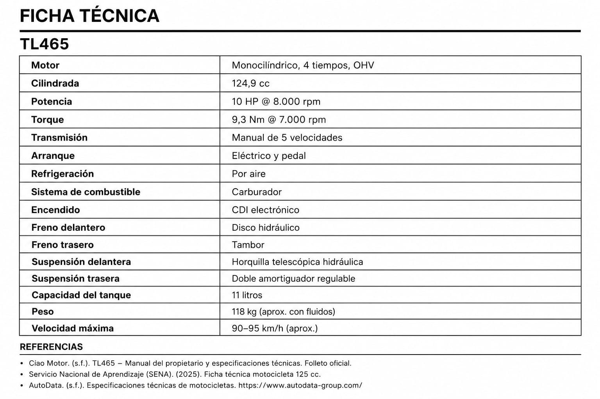

Ciao's TL465: A Motorcycle Built for Taiwan's Streets
ML – In a country where motorcycles are part of everyday life, the TL465 stands out for its stability, performance, and commanding road presence.
May 28, 2026 | 5:00 PM

SYM TL465 owned by Ciao. Photograph taken by the owner and provided for this article.
In Taiwan, it is common to see thousands of motorcycles traveling through city streets, parked outside restaurants and universities. They have become one of the country's most important means of transportation. We had the opportunity to learn more about Ciao's motorcycle, a SYM TL465. According to him, it offers a stable and comfortable riding experience. Its styling and engineering make it feel much sportier than a traditional urban scooter. Although it is not the most practical option for weaving through heavy city traffic, it performs exceptionally well at higher speeds and feels right at home on open roads.
Stable and Comfortable Riding
One of the characteristics Ciao appreciates most about the TL465 is its remarkable stability at highway speeds. The motorcycle delivers a confident and comfortable ride, especially on long stretches of open road where its full performance can truly be enjoyed.

The Cost of Owning a TL465
According to Ciao, one of the less favorable aspects of the TL465 is the cost of maintenance and consumable parts such as tires, brake components, and other replacement items. As a sport-oriented motorcycle, it generally requires more maintenance than smaller urban motorcycles or scooters.
The Origins of SYM
SYM is a Taiwanese manufacturer founded in 1954. During its early years, the company produced bicycles and motorcycles. In 1960, it began collaborating with Honda, manufacturing motorcycles under license. It also assembled automobiles for Hyundai. Today, with more than 70 years of history, SYM has established a presence in over 90 countries worldwide.
Taiwan TL465 – ML (Valtyna)
The Impression the TL465 Leaves
Personally, I had never seen a motorcycle like the TL465 in my own country, and that's exactly what makes it so fascinating. Its sporty styling, larger dimensions, and commanding presence immediately set it apart from conventional motorcycles. There's no doubt that riding a machine like this through the streets of Taiwan must be a unique and exciting experience. Would you ride one?
